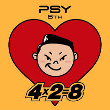
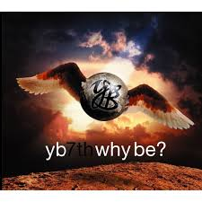
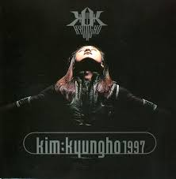
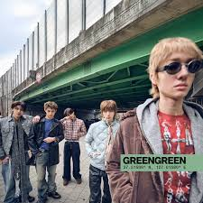
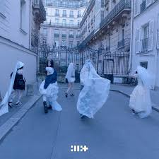

특정 장르의 깊이를 탐구하고 새로운 음악적 스펙트럼을 넓히는 아카이브
테마: #깊은_밤_마음을_울리는_발라드

추천이유: 삶에 지쳐 기댈 곳이 필요한 사람들에게, 음악 자체가 하나의 안식처가 되어주는 듯한 치유의 힘을 가진 곡입니다.
추천이유: 담담하게 읊조리듯 시작해 감정을 고조시키는 윤하의 보컬은, 누군가에게 기대고 싶거나 혹은 잊지 못할 기억을 떠올리는 밤에 가장 잘 어울립니다.
테마: #스트레스를_날려버릴_강렬한_락

추천이유: 시원한 질주감이 느껴지는 곡으로, 에너제틱한 기타 사운드가 일상 속 스트레스를 날려버리기에 제격입니다.

추천이유: 폭발적인 고음과 샤우팅으로 답답함을 단숨에 해소해 주는 명곡입니다.
테마: #지금_가장_트렌디한_K팝_플레이리스트

추천이유: 투박한 신디사이저와 캐치한 리듬이 어우러진 새로운 질감의 음악으로, 미완성 느낌 없이 꽉 채워진 완성도를 자랑합니다.

추천이유: 묵직한 킥 드럼과 테크노 팝 장르가 결합되어 한 번 들으면 잊히지 않는 강한 중독성을 자랑합니다.